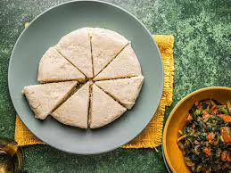

Ugali recipe

Ingredients
- 1 Cup flour (more or less)
- 2 Cups water (more or less)
procedure
-
Boil water until it bubbles. The water should be very hot. This ensures the ugali will cook perfectly
-
Add a cup full of flour into the water. Let it cook a few seconds until water starts to cover the flour
-
Use a wooden spoon to quickly start mixing the flour and water
-
Add a handful of flour and continue to mix the water and flour it will start to come together
-
Reduce heat to medium and keep turning the ugali as it continues to stick together
-
Gather the ugali and press it onto the side of the sufuria
-
place the wooden slioon under the ugali and form into a ball in the middle of the sufuria
-
Repeat pressing the ugali on the side of the sufuria and turning it to the middle
-
Once the ugali has become firm, turn it once more and smoothen it into a round. You will know your ugali is ready once you start to smell the aroma clearly
- 1
Turn the ugali over onto a plate
-
Dip the wooden spoon into water and use it to smoothen the ugali into a round ball on the plate
-
Serve the ugali whole or slice. Enjoy with your favorite stew, meat, veggies, fish etc